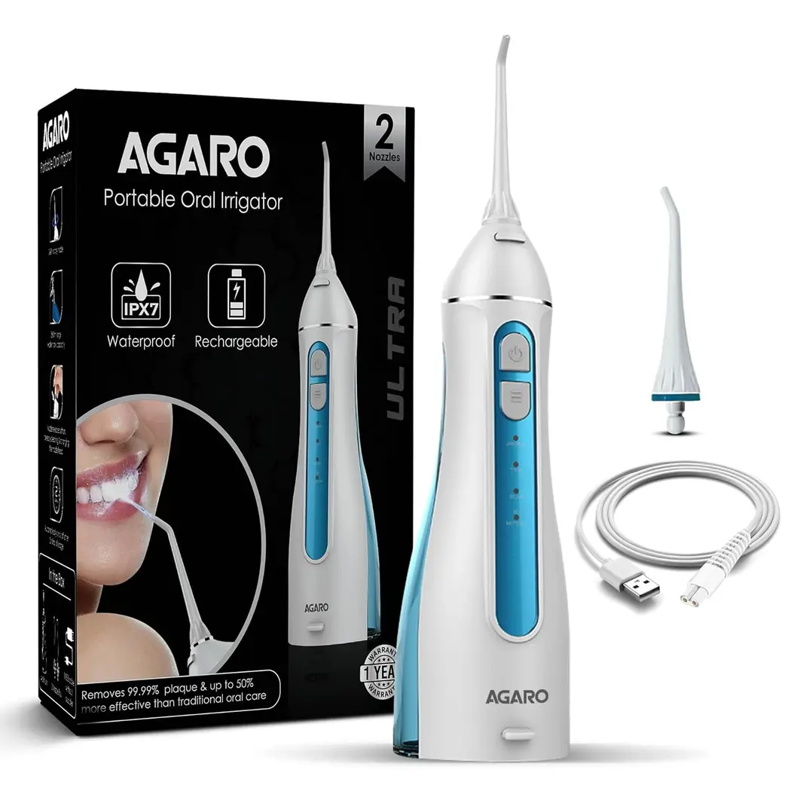
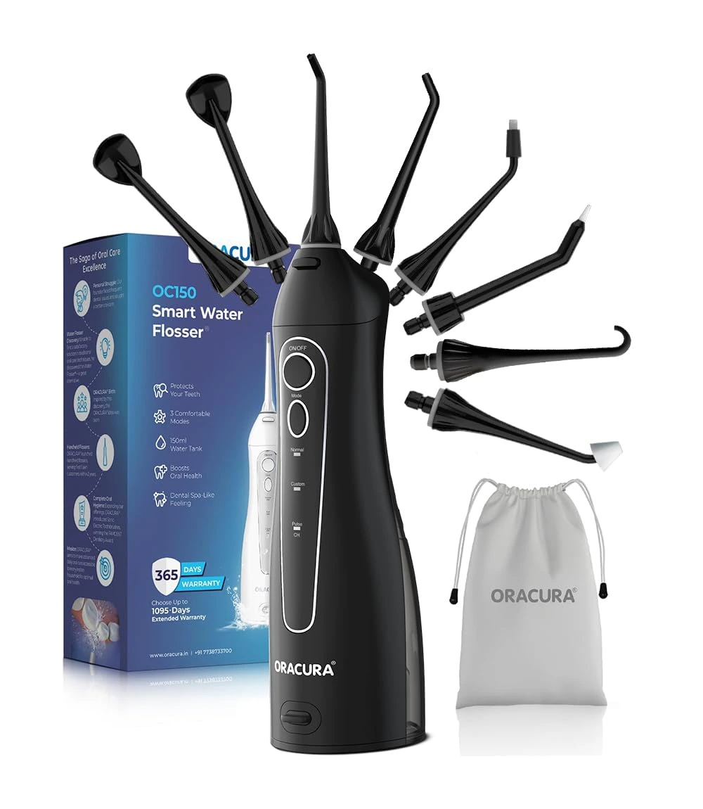
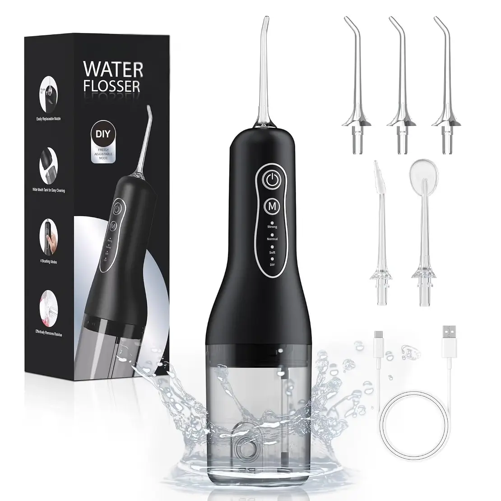

Best Water Flossers in India — Dental Flosser Buying Guide (2026)

Best Water flossers compared for pressure control, tank capacity, battery life, nozzle options, waterproofing, and everyday value.
Water flossers, also known as dental flossers or oral irrigators, have become a practical addition to many daily oral-care routines. Instead of using a strand of floss, they use a controlled stream of pulsating water to help remove food debris and plaque from between teeth and along the gumline. They can be especially convenient for people with braces, bridges, implants, crowns, or difficulty handling traditional string floss.
The challenge is choosing a model that combines useful water pressure, comfortable controls, adequate tank capacity, reliable battery life, and nozzle options without paying for features you may never use. A higher pressure rating alone does not necessarily make a flosser better; good pressure control is just as important, particularly for first-time users and sensitive gums.
For this guide, we compared popular water flossers based on their available specifications, user feedback, design, pressure control, tank size, battery convenience, waterproofing, nozzle selection, and overall value. Rather than filling the list with similar products, we kept only the models that offer a meaningful reason to consider them.
💡 Quick Tips Before Buying a water Flosser
- Look for adjustable pressure or multiple cleaning modes so you can start gently and increase intensity gradually.
- IPX7 waterproofing is useful because the device can be rinsed easily and is better suited to bathroom use.
- A tank around 200–300ml is usually sufficient for a complete cleaning session for many users.
- Battery life matters more than headline charging speed if you plan to use the flosser every day or while travelling.
- Different nozzle types can be useful for orthodontic cleaning, periodontal care, or shared household use.
- Before buying, check whether replacement tips are readily available and compatible with the exact model.
👉 Here are our top picks for the best water flossers available online:
1. AGARO Regal Cordless Oral Irrigator (Approx. ₹1,699) 🔥 Editor's Pick

⭐ Best Water Flosser for Everyday Use (2026)
Why We Picked It: The AGARO Regal stands out as the best overall choice because it gets the important fundamentals right without making the design unnecessarily complicated. It combines cordless rechargeable operation with four cleaning modes, a 200ml water tank, a rotary nozzle and IPX7 waterproofing, giving users useful control over everyday water flossing while keeping the device portable and easy to handle.
What makes it our top pick is the balance between usability and features. The four modes include soft, normal, pulse and custom settings, so users can start gently and adjust the cleaning intensity to their preference. The 200ml reservoir is also a practical middle ground for a cordless flosser, while the included two nozzle tips keep the setup simple rather than overwhelming.
For someone buying a cordless water flosser for regular everyday use, the AGARO offers a particularly well-rounded combination of cleaning control, portability, water resistance and value. It may not have the largest tank or the most accessories in this list, but its overall balance is why we place it at #1.
- ✔ Adjustable cleaning intensity makes it easier to find a comfortable pressure level
- ✔ Cordless rechargeable design is convenient for everyday bathroom use and travel
- ✔ Multiple cleaning modes provide more flexibility than a single-pressure flosser
- ✔ IPX7 waterproof construction makes rinsing and cleaning the device easier
- ✔ Detachable water reservoir makes filling and cleaning easier
- ✔ Includes 2 nozzle tips for everyday oral-care needs
- ✔ 360° rotating nozzle helps reach difficult areas around the mouth
- ✔ Good feature-to-price balance for a first water flosser
- ❌ The charging arrangement is less convenient than a modern USB-C setup
- ❌ Cordless tank capacity is still smaller than that of large countertop irrigators
⚠️ Price and availability may change on Amazon.in
2. H2ofloss Water Dental Flosser Teeth Pick (Approx. ₹2,849)

⭐ Best for Feature-Rich Everyday Flossing (2026)
Why We Picked It: H2ofloss earns the No. 2 position because it offers an unusually strong combination of cleaning control, reservoir capacity and everyday practicality at its price point. The 300ml water tank is substantially more convenient than the smaller reservoirs found on many cordless flossers, while the adjustable pressure settings let users find a comfortable intensity instead of being restricted to a single water-jet strength.
It is also a product with a surprisingly large amount of real-world user feedback. Many users praise the strong, customizable water stream, comfortable handling and ability to remove food debris that remains after brushing. Some long-term owners report using H2ofloss models for several years, while others have experienced reduced pressure, battery or operating problems after extended use. That mixed durability feedback is worth considering, but it does not take away from the model's strong value and cleaning performance.
For users who want a cordless water flosser with a generous tank, adjustable intensity and enough versatility for regular home use, H2ofloss is one of the more compelling options in this price range. Its combination of features and established user base makes it a stronger overall choice than many lesser-known portable flossers.
- ✔ 300ml reservoir reduces the need for frequent refilling
- ✔ 5 adjustable pressure modes provide useful control over cleaning intensity
- ✔ Strong, customizable water stream is frequently praised by users
- ✔ Cordless rechargeable design works well for everyday bathroom use and travel
- ✔ IPX7 waterproof construction makes routine cleaning and bathroom use easier
- ✔ Multiple nozzle options add flexibility for different oral-care routines
- ✔ Good feature-to-price balance compared with more expensive premium flossers
- ✔ Large user base provides considerably more real-world feedback than many lesser-known brands
- ✘ Stronger pressure settings can feel too intense for beginners or sensitive gums
- ✘ Larger than some ultra-compact cordless flossers, so it is not the most pocket-friendly option
Best For: Users who want a powerful cordless water flosser with a large reservoir, adjustable pressure and a strong feature set without moving into premium pricing.
Buy on Amazon.in⚠️ Price and availability may change on Amazon.in
3. ORACURA OC150 Dental Pro Smart Water Flosser (Approx. ₹2,849)

⭐ Best for Versatile Cleaning & Travel (2026)
Why We Picked It: The ORACURA OC150 Dental PRO is a compact rechargeable water flosser that stands out for its combination of portability, adjustable water pressure and a broad selection of nozzle tips. Its 150ml reservoir keeps the device relatively compact, while three operating modes and eight pressure levels give users considerably more control over the intensity of the water jet.
The Dental PRO version is particularly useful for users who want more than a basic interdental cleaner. Its eight included tips cover different cleaning situations, including standard cleaning, orthodontic care, periodontal pockets, implants and tongue cleaning. The 360° rotating nozzle also makes it easier to reach different areas of the mouth.
Long-term user feedback is generally positive, with some owners reporting several years of use. However, experiences are not universally consistent, with occasional reports of charging or water-ingress problems. The smaller 150ml tank is another trade-off: it helps keep the unit portable, but users who prefer longer uninterrupted cleaning sessions may need to refill it.
- ✔ 8 included nozzle tips provide considerable versatility
- ✔ 3 operating modes with 8 pressure levels for finer intensity control
- ✔ Compact 150ml reservoir keeps the cordless design relatively portable
- ✔ 360° rotating nozzle helps reach difficult areas between and around teeth
- ✔ Rechargeable design is convenient for everyday use and travel
- ✔ IPX7 water-resistant construction is well suited to bathroom use
- ✔ Protective pouch makes storage and travel easier
- ✔ Long-term users report good durability and continued performance
- ✘ 150ml tank is smaller than many countertop water flossers
- ✘ More accessories can feel excessive if you only need standard interdental cleaning
- ✘ Some user reports mention charging or water-ingress problems over time
⚠️ Price and availability may change on Amazon.in
4. FlossJet Water Flosser for Teeth (Approx. ₹2,199)

⭐ Best Feature-Rich Alternative (2026)
Why We Picked It: FlossJet is a worthwhile alternative for buyers who want a cordless water flosser with a generous water reservoir, adjustable cleaning intensity and several nozzle options without moving into a more expensive premium model. Its combination of a 260ml tank, multiple operating modes and specialized tips makes it more versatile than many basic portable flossers.
The different nozzle types also give the FlossJet more flexibility for routine interdental cleaning and situations such as orthodontic or periodontal care. However, I would rank it below the three products above because there is less established long-term user feedback and brand history to assess durability and replacement accessory support with the same confidence.
- ✔ 260ml removable reservoir is convenient for longer cleaning sessions
- ✔ Multiple cleaning modes allow the water-jet intensity to be adapted to personal comfort
- ✔ Five nozzle tips provide useful versatility for different oral-care routines
- ✔ Includes specialized tip options for orthodontic, periodontal and tongue cleaning
- ✔ Broad pressure adjustment gives users more control than basic fixed-pressure flossers
- ✔ IPX7 water-resistant design is practical for regular bathroom use
- ✔ Cordless rechargeable format is convenient for everyday use and travel
- ✔ Memory function can make repeated daily use more convenient
- ❌ Less established brand and smaller long-term user history than the higher-ranked models
- ❌ Long-term durability is harder to judge because there is less independent user feedback
- ❌ Replacement nozzle availability and cost should be checked before purchasing
- ❌ Feature-rich design may be unnecessary if you only need basic daily interdental cleaning
Best For: Buyers looking for a versatile cordless water flosser with a large reservoir, adjustable cleaning intensity and several nozzle options, especially when it is available at an attractive price.
Buy on Amazon.in⚠️ Price, seller, features and availability may vary on Amazon.in
📘 Best Water Flossers — 2026 Buying Guide
- ✔ Choose adjustable pressure rather than simply choosing the model with the highest maximum PSI.
- ✔ IPX7 waterproofing is useful for bathroom use and makes the device easier to rinse after each session.
- ✔ A 200–300ml tank is a practical range for many cordless water flossers.
- ✔ Check the exact model number before buying replacement tips or accessories.
- ✔ If you have braces, implants, periodontal concerns or sensitive gums, look for appropriate nozzle options and a gentle pressure setting.
- ✔ A reliable rechargeable battery is more useful than an impressive battery specification that is difficult to verify in everyday use.
- ✔ For long-term ownership, replacement-tip availability and after-sales support can matter as much as the initial purchase price.
Top 3 Best Water Flossers
| Features | 🏆 Best Overall AGARO Regal | 🥈 Best Feature-Rich H2ofloss Water Dental Flosser | ORACURA OC150 Dental PRO |
|---|---|---|---|
| Best For | Best overall balance of comfort, usability, portability and value | Users who want a larger tank, stronger feature set and more cleaning control | Users who want a compact design with multiple pressure settings and specialized tips |
| Cleaning Modes | 4 cleaning modes | 5 adjustable cleaning modes | 3 cleaning modes |
| Tank Capacity | 200ml | 300ml | 150ml |
| Pressure & Control | Multiple modes for adjusting cleaning intensity | 5 modes offer greater control over cleaning intensity | 8 adjustable pressure levels across 3 modes |
| Portability | Cordless and rechargeable | Cordless and rechargeable | Compact, cordless and rechargeable |
| Water Resistance | IPX7 | IPX7 | IPX7 |
| Nozzle Options | 2 nozzle tips for everyday oral care | 6 jet tips for different oral-care needs | 8 nozzle tips for routine and specialized cleaning |
| Main Strength | Strong all-round balance of usability, comfort and price | 300ml tank, 5 modes and a feature-rich cordless design | Compact design with 8 pressure levels and a wide selection of tips |
| Main Trade-Off | Smaller tank and fewer tips than the more feature-rich models | Stronger settings may feel intense for some beginners; long-term durability reports are mixed | Smaller 150ml tank may require refilling during longer cleaning sessions |
| Price Position | Value-focused | Mid-range feature-rich option | Mid-range versatile option |
Why Trust Us?
- ✔ We compare product specifications, user feedback and real-world usability.
- ✔ Products are assessed for pressure control, tank capacity, battery convenience, nozzle options and overall value.
- ✔ Rankings are based on the strengths and limitations of each model rather than simply the number of features.
- ✔ Product information and prices can change, so we recommend checking the current listing before purchasing.